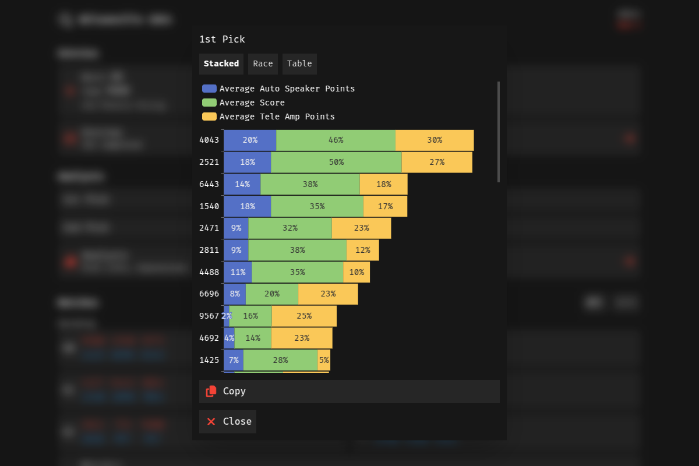
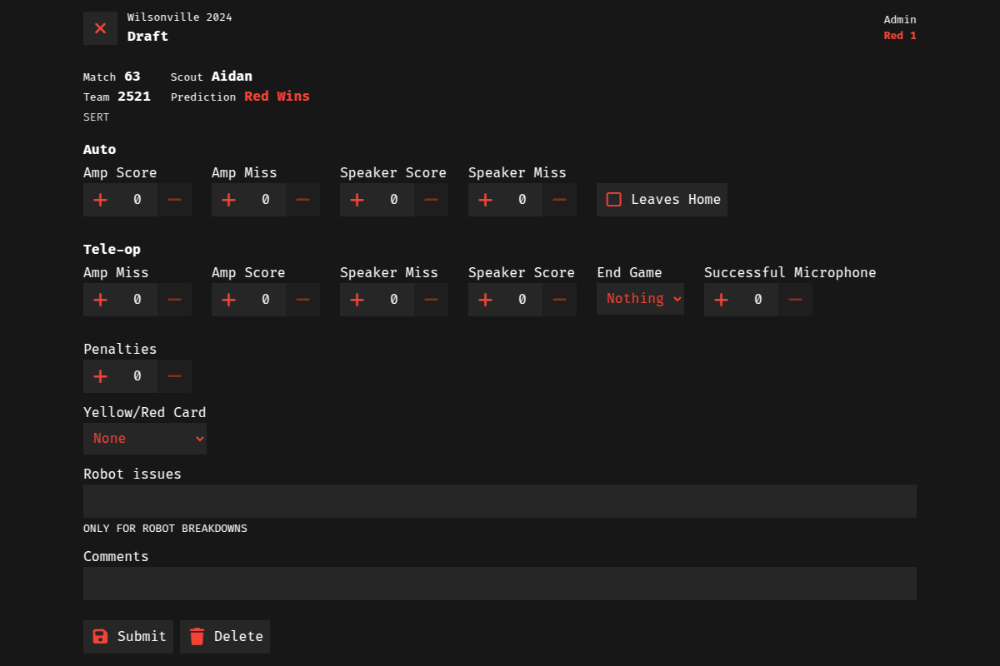
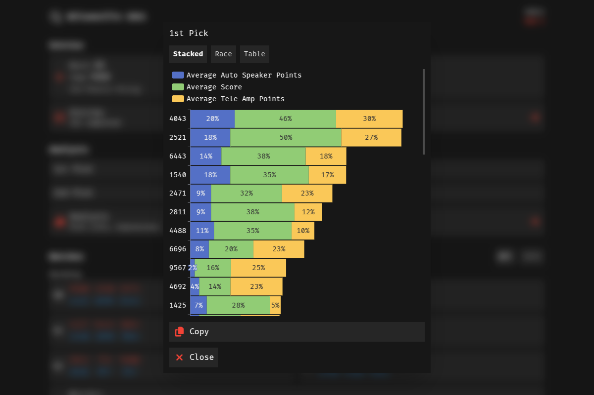
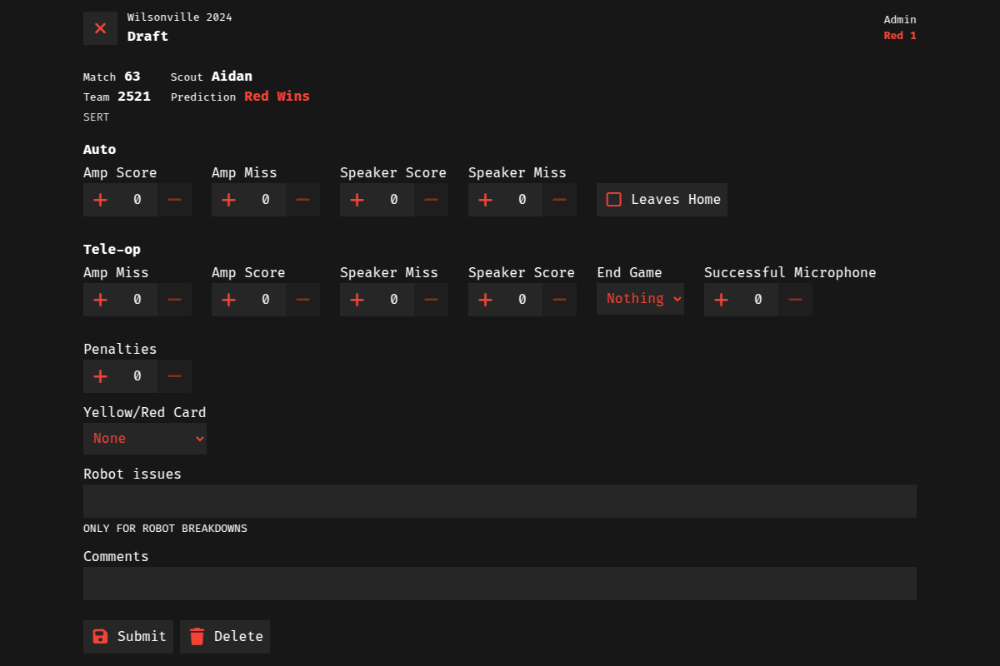

FRC Team 2471 - Mean Machine
I've been in FIRST Robotics for almost 10 years; it's been an important part of my life. Most of my interest in web development was formed through robotics, especially as a member of Team Mean Machine.
Alumni & Mentor, 4 years, since 2021
I am introducing student members to web development concepts through engaging projects.
MeanScout: Highly configurable peer-to-peer FRC scouting web app
We use MeanScout to scout other teams during competitions; recording, analyzing, and visualizing data in an all-in-one app. Recent improvements include:
- Created co-op minigame that encourages scouts to analyze teams and strategize together
- Added interactive charts and visuals
- Incorporated QR codes and fountain codes to easily transfer any amount of data between devices without internet
 



Member, 4 years, 2017 - 2021
Created app for robot performance data collection - Svelte, PWA
Team website maintenance - WordPress